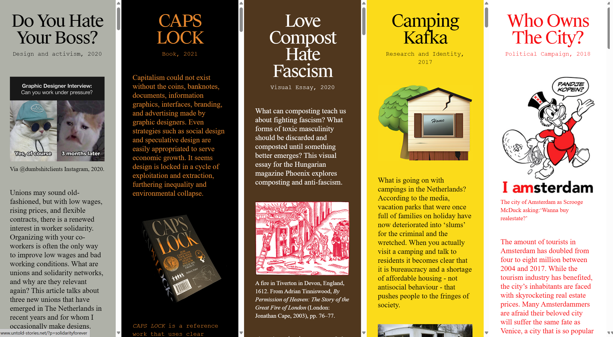
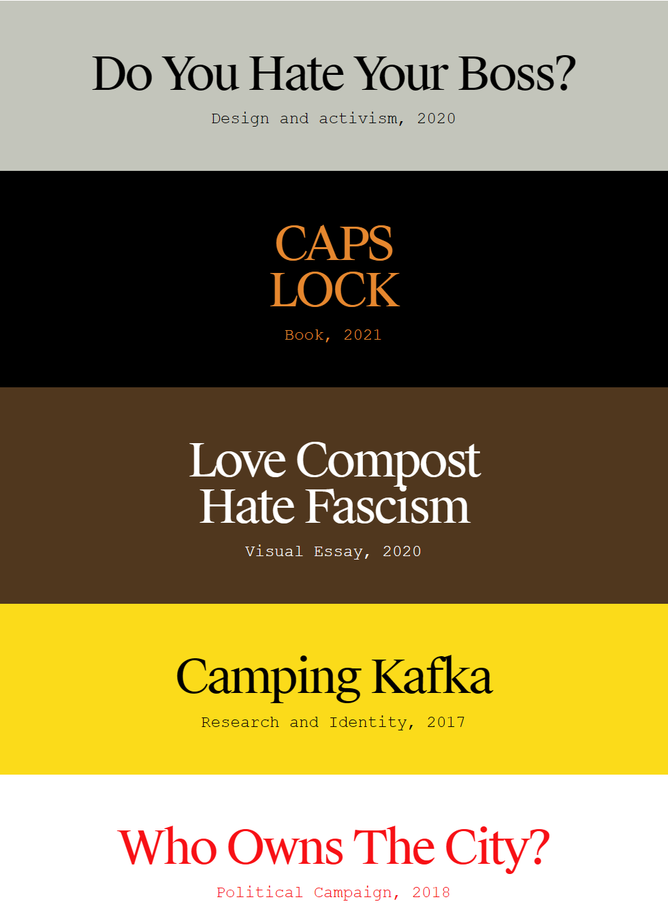

내용과 형식의 관계
웹사이트는 간결하고 현대적인 레이아웃을 사용하고 다양하고 단순한 색상을 채택하고 배경을 약화시키고 내용을 강조하며 효과적으로 내용 표현력을 향상시킵니다.대비가 높아서 글자를 매우 또렷하게 읽을 수 있다.
웹페이지 사이의 구성
사이트는 일관된 디자인과 내비게이션 구조를 유지해 사용자들이 다양한 이야기를 쉽게 접할 수 있도록 했다.
PC/모바일 접속 시 차이
모바일은 예술 작품의 시각적 충격을 유지하면서 특정 시각적 요소와 텍스트 크기를 압축하여 더 작은 디스플레이에 적응합니다.화면 크기는 줄었지만 브라우징 체험에는 지장이 없었다.
